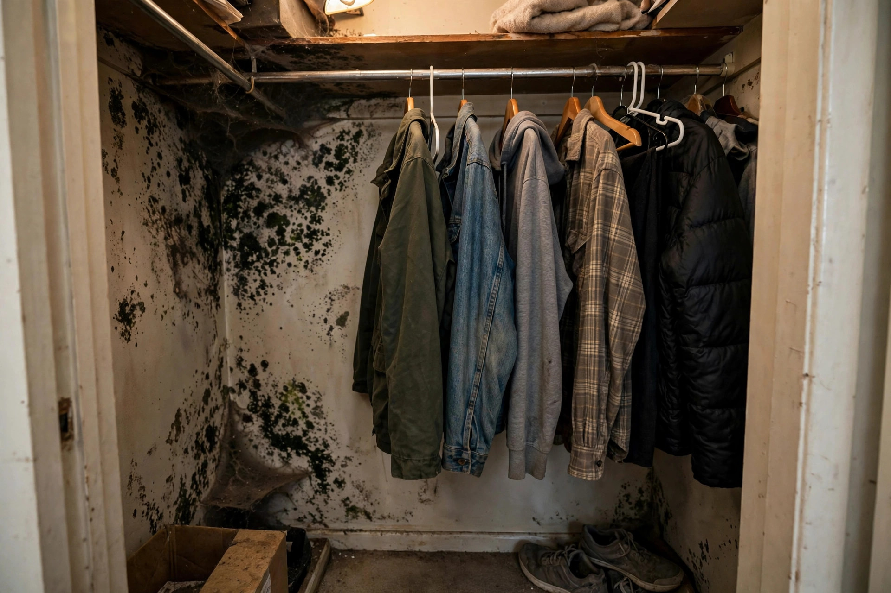

Closet Mold Cleanup in Nampa, ID
Closets are mold's favorite hiding spot — dark, still, and often pressed against a cold exterior wall. We find the condensation source and clean it properly.

Two reasons closets grow mold first
Cold-wall condensation
In Fall River and Lava Springs subdivisions, many closets sit on north-facing exterior walls. The drywall runs several degrees colder than the room, so moisture in the air condenses there first.
Zero airflow
Packed clothes, closed doors, and no vents mean damp air never leaves. Even a small moisture source becomes a big problem when air can't move.
Common questions, straight answers
Why does mold keep coming back in my closet?
Closets on exterior walls run colder than the room. Warm indoor air condenses on the cold drywall, and packed clothes block airflow — a perfect loop.
Is closet mold a sign of a bigger problem?
Sometimes it's just the closet. But if several closets or rooms show growth, the whole house may have a humidity or ventilation issue worth checking.
Do I need to throw away clothes with mold on them?
Washable fabrics usually survive a hot wash. Leather, suede, and heavily affected items may not. We can advise once we see the extent.
Will painting over it with mold-resistant paint work?
Only after the growth is removed and the moisture fixed. Paint over active mold just hides it temporarily.
How do I keep the closet mold-free afterward?
Leave a gap between clothes and the wall, keep the door ajar when possible, and make sure the room's humidity stays reasonable.
Closet cleanup checklist
- Clothes and contents moved out and assessed
- Affected drywall cleaned or cut out as needed
- Framing HEPA-vacuumed and dried
- Condensation source identified — insulation, ventilation, or humidity
- Clear guidance on keeping it from returning
When a closet means a house problem
One moldy closet is usually a closet issue. But growth in multiple closets, or closets plus bathrooms and windows, points to whole-house humidity. The CDC notes that controlling indoor moisture is the key step in limiting mold throughout a home. If several rooms are affected, ask about a broader assessment.
Renters should know: Idaho landlords are generally responsible for structural moisture problems — roof leaks, plumbing failures, failed weatherproofing — while tenants handle day-to-day ventilation like running bath fans. Document the growth with photos and notify your landlord in writing before it spreads. Written notice with dates protects both sides if the issue escalates into a dispute about responsibility for professional cleanup costs and any needed repairs afterward too.
Sources: CDC — Mold
A couple in Lava Springs finds spots on the back wall of their walk-in closet. The wall faces north and the insulation above has a gap. Cleanup removes the affected drywall, the gap gets filled, and a small vent keeps air moving — the spots don't come back.
Closets most likely to grow mold
North-facing exterior closets
Coldest walls in the house. Condensation forms here first and lingers longest through winter.
Closets sharing plumbing walls
A slow supply-line drip inside the wall feeds the closet side silently for months before anyone looks.
Ground-floor closets on slab
Moisture wicks up through the slab edge into baseboards. Shoes and boxes on the floor hide the first signs.
The closet drying process
Clear the space
Everything comes out so walls are accessible. Items are sorted — what can be cleaned, what should be washed, what needs discarding.
Remove growth
Affected drywall sections are cut out. Hard surfaces are scrubbed and HEPA-vacuumed to capture remaining spores.
Dry thoroughly
A small dehumidifier or directed airflow dries the wall cavity. Moisture meters confirm it's ready before anything goes back.
Prevent return
Insulation gaps are flagged, ventilation is improved, and you get specific steps to keep the closet dry long-term.
Musty closet?
Small space, quick fix — if you catch it early. Call and tell us what you're seeing.